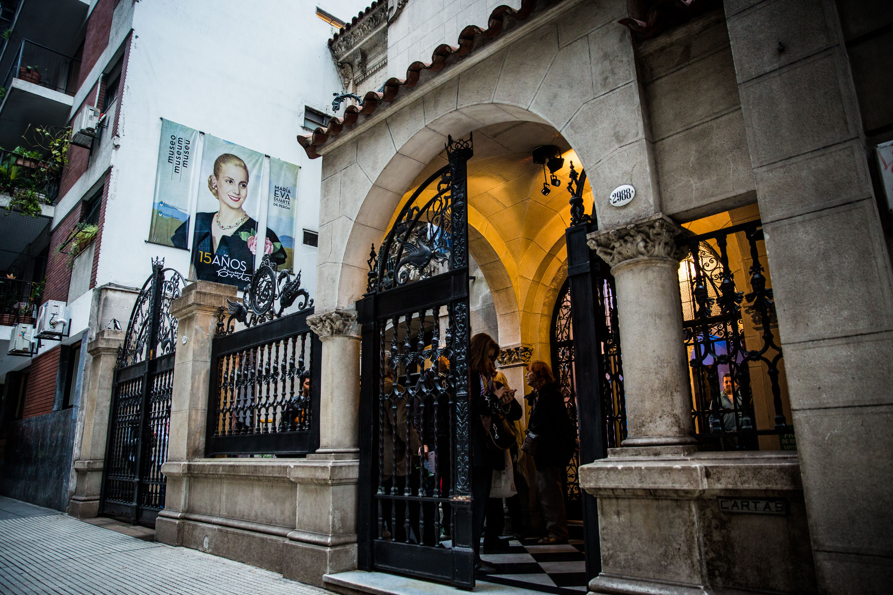
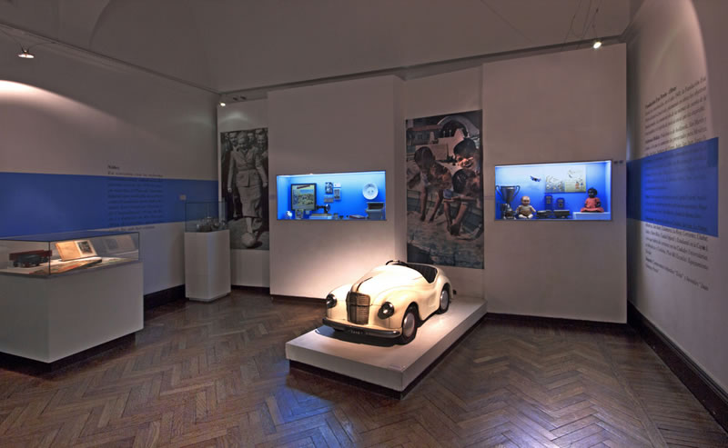

Faivovich y Goldberg
Faivovich y Goldberg
Otumpa
Historia
En el Instituto Nacional de Investigaciones Históricas Eva Perón- Museo Evita llevan adelante una vasta tarea de rescate y difusión de la figura de Eva Perón y su huella indeleble en nuestra historia. Son el primer y único instituto del Ministerio de Cultura de la Nación Argentina dedicado a profundizar el conocimiento histórico sobre la vida de una mujer líder política.

EVITA EVITA
EVITA EVITA
Evita Evita
El Museo Evita es una de nuestras áreas más visitadas. Miles de personas disfrutan de las exposiciones en la antigua casona de Lafinur 2988, en el barrio porteño de Palermo, habiendo sido elegido como una de las diez atracciones principales en su categoría por viajeros de todo el mundo a través de la plataforma TridAdvisor.

Restaurante del museo
El Museo Evita cuenta con un restaurante encantador que complementa la experiencia cultural y turística. El restaurante, llamado "Café de Las Luces," ofrece a los visitantes la oportunidad de disfrutar de la gastronomía argentina en un ambiente acogedor y elegante. El restaurante se encuentra en el mismo edificio del museo y cuenta con una decoración que rinde homenaje a la época de Eva Perón, lo que te transporta de manera única a la década de 1940 y 1950 en Argentina.
Ubicación
- Martes a Domingos de 11:00 a 19:00 hs
- LADINUR 2988, CABA
- Información al 011- 4807-9433